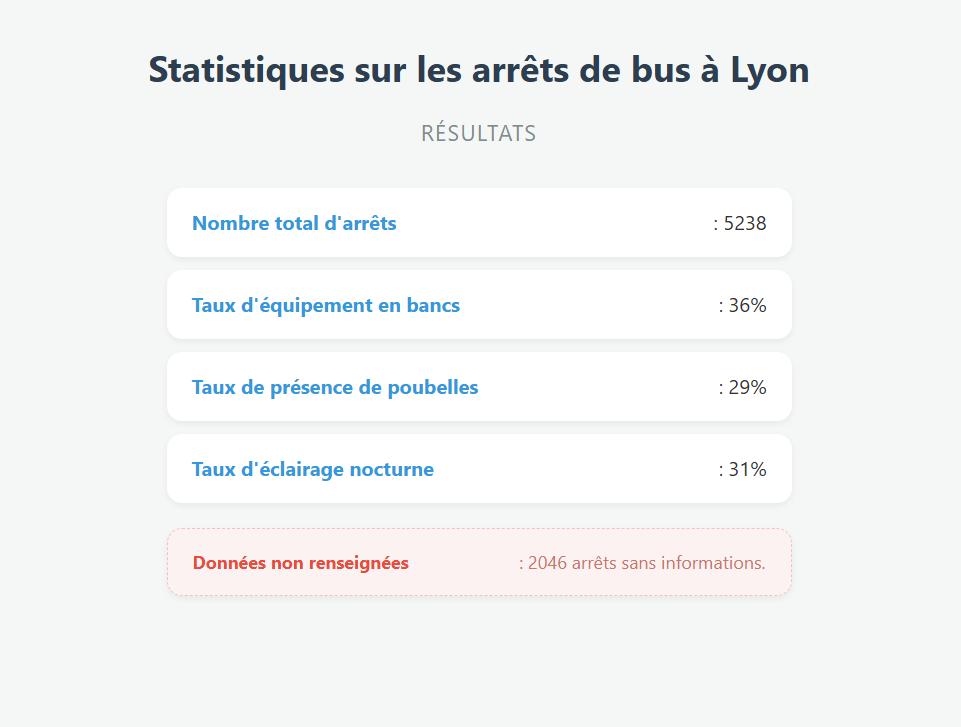
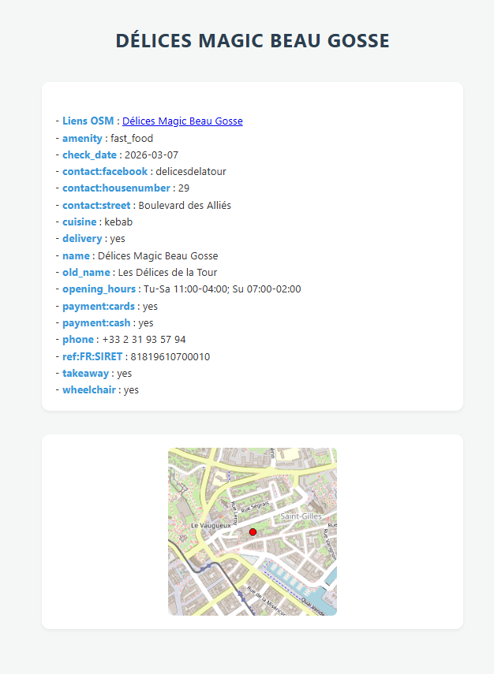
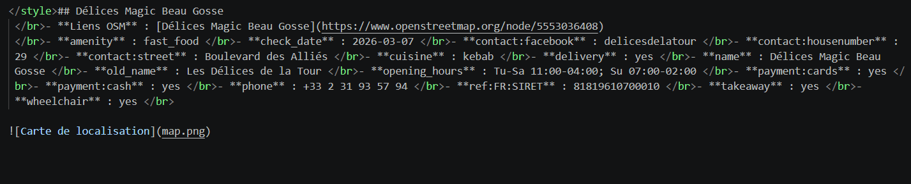
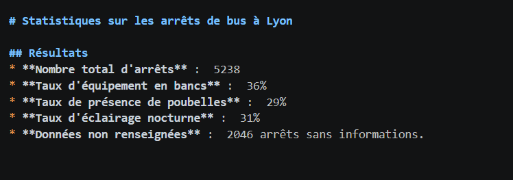
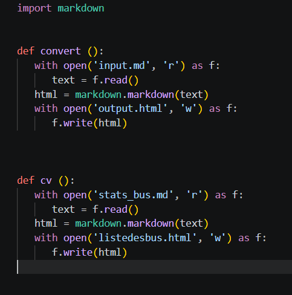

Présentation du projet
Développement en Python d'un programme interrogeant l'API Overpass (OpenStreetMap) pour extraire des données géolocalisées sur une zone choisie (ex. lignes de bus ou restaurants à Lyon) et produire des statistiques structurées sous forme de fichiers Markdown, convertis automatiquement en HTML.
Contexte & Démarche
Ce projet portait sur la maîtrise des APIs REST. Il consistait à interroger l'API Overpass (OpenStreetMap) pour extraire des données géolocalisées et produire des statistiques sur une zone géographique choisie.
Prise en main de l'Overpass Query Language → développement des fonctions de requête en Python → parsing JSON → calcul de statistiques (comptage, moyennes) → export Markdown → conversion automatique en HTML via la fonction convert().
Documents produits & ce qu'ils prouvent

Cette capture montre le résultat de ma requête Overpass sur les lignes de bus de Lyon. Mon programme interroge l'API, récupère la liste des objets OSM correspondants et les affiche avec leurs attributs (nom, référence, opérateur…).
Elle prouve ma capacité à formuler une requête API structurée et à interpréter la réponse JSON pour en extraire les champs pertinents.

Cette capture affiche les attributs complets d'un nœud OSM (ici un restaurant) : nom, cuisine, adresse, coordonnées GPS, site web, etc. Mon programme parse l'objet JSON et restitue ces informations de manière lisible.
Elle démontre ma maîtrise du parsing JSON en Python et ma capacité à naviguer dans des structures imbriquées pour extraire des données ciblées.

Mon programme génère automatiquement ce fichier Markdown de statistiques : nombre total de restaurants, répartition par type de cuisine, restaurants avec site web, etc. Toutes ces valeurs sont calculées à partir des données brutes de l'API.
Ce document prouve que je suis capable de produire une chaîne de traitement complète : collecte → analyse → restitution structurée, de manière entièrement automatisée.

Ce fichier Markdown présente les statistiques du réseau de bus lyonnais : nombre de lignes, opérateurs présents, lignes les plus longues… Le fichier est généré automatiquement par mon programme à chaque exécution.
Il illustre la réutilisabilité du code : le même programme peut analyser n'importe quelle zone géographique en changeant simplement les paramètres de la requête Overpass.

J'ai développé cette fonction convert() qui transforme automatiquement les fichiers Markdown en pages HTML : elle parse les titres, paragraphes et listes du Markdown et génère les balises HTML correspondantes.
Cette fonction illustre ma capacité à automatiser une tâche répétitive et à concevoir un outil générique réutilisable — compétence clé dans tout environnement d'administration ou de développement.
Bilan
Très bonne maîtrise de Python et des requêtes API REST. Traitement des données JSON propre et bien structuré. Bonne organisation en binôme avec une répartition claire des tâches.
Quelques difficultés pour générer la carte et centrer précisément les marqueurs sur la visualisation géographique. Problème résolu grâce aux indications du professeur et à notre relecture du code.
Fichiers du projet
🗜️ Télécharger l'archive du projet (code Python)